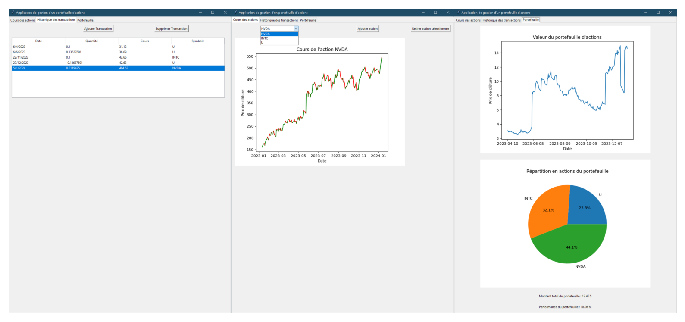

Finance Projects
SPX & VIX Joint Smile Calibration
- Joint calibration of SPX & VIX volatility smiles using a Quintic OU stochastic volatility model
- Forward variance term structure ξ₀(t) extracted from market using Carr-Madan formula
- VIX options priced semi-analytically via Gauss-Hermite quadrature exploiting polynomial structure
- Monte Carlo simulation for SPX derivatives with variance reduction (antithetic paths, control variates)
- Optimization via differential evolution to fit real volatility surfaces (CBOE data)
- Analysis of parameter sensitivity and implications of skew/asymmetry in smiles
- Exploration of model extensions: forward calibration, stress testing, real-time arbitrage detection
Stocks time series analysis
- Data preprocessing and computation of derived series Y(m) for m ∈ {1, 2, 3, 4}
- AR(1) modeling with structural break detection
- Visualization of residuals before and after the break
- Comparison with a normal density & QQ-plots to assess residual normality
- Economic analysis of market regime shifts (SVB crisis, Credit Suisse, ...)
Stock portfolio tracking software

- Access to stock prices with Yfinance
- Storing positions in a CSV
- Graphical user interface with Tkinter
- Summary of portfolio performance and diversification